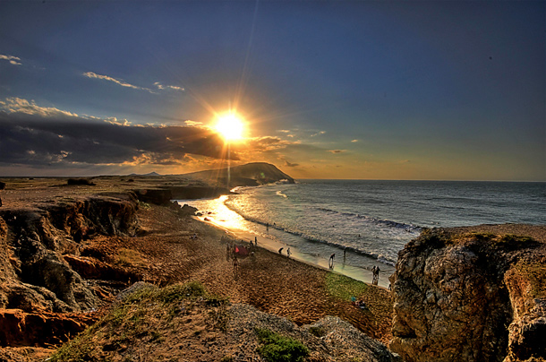
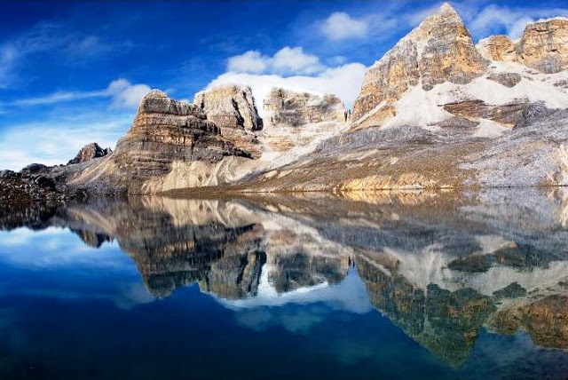
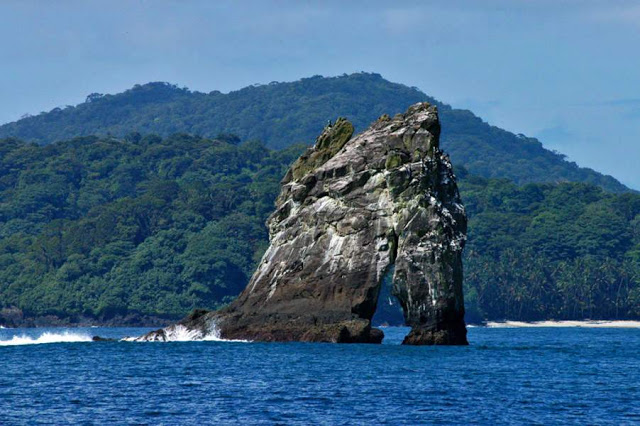
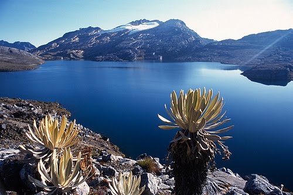
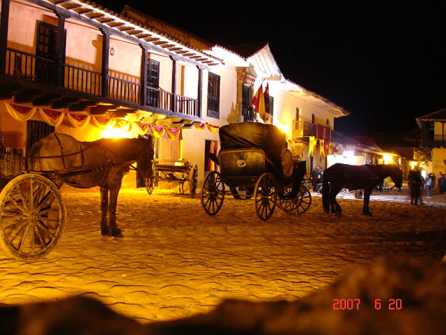
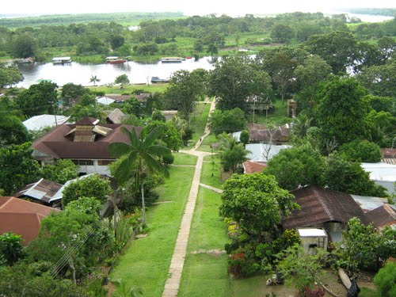

El parque arqueológico Ciudad Perdida se encuentra en la Sierra Nevada de Santa Marta, este atractivo hipnotiza a los viajeros con sus hermosos caminos entre bosques, en los que existen cascadas, puentes colgantes y restos del pueblo Tayrona.
Para los amantes de los paraísos naturales les aconsejo viajar a Caño Cristales, para muchos, el río más hermoso del mundo. Se encuentra ubicado en la Sierra de la Macarena, en el municipio de la Macarena
Destinos Para Muchiliar.
Si te apasionan los ambientes desérticos y costeros debes agregar el Cabo de la vela a tu agenda. Este es un accidente costero al sur del mar caribe. Está ubicado en el extremo norte de Suramérica, específicamente en en la península de la Guajira colombiana.
Si eres de los que te gustan las montañas y los paisajes hermosos te recomiendo el Nevado del Cocuy. Allí podrás observar y tocar la nieve, algo que muchos no han experimentado. Este Nevado está ubicado al norte de Boyacá y no es necesario que seas un experto en montañismo para subir a los lugares donde puedes observar estos extraordinarios paisajes colombianos.

Si eres amante de los ambientes salvajes este destino turístico te fascinará, Isla Gorgona está ubicada a 35 km al oeste de la cota pacífica colombina y pertenece al municipio de Guapí en el departamento del Cauca.

Esta ubicada en jurisdicción del municipio de Chíquiza, en el departamento de Boyacá.

JESUS DIAZ:more_vert
VILLA DE LEYVA
Si lo que buscas es descanso y relajamiento, villa de Leyva es una excelente alternativa. Esta ubicado en la Provincia de Ricaute en el departamento de Boyacá y una de sus ventajas es que está localizado a menos de 3 horas de Bogotá. aquí puedes encontrar hermosos hoteles, restaurantes y disfrutar de la arquitectura de este hermoso municipio.

PUERTO NARIÑOclose
Está ubicado a orilla del río Loretayo, a 87 km de la Leticia, la capital del departamento de Amazonas, y a 1240 km de Bogotá. Cuenta con una altitud de 159 msnm, registra una temperatura de 30 grados centigrados.
09 de abril de 2017, deje su comentario

Perfil del Autor
Hola, quiero compartirles mi experiencia como programador web.